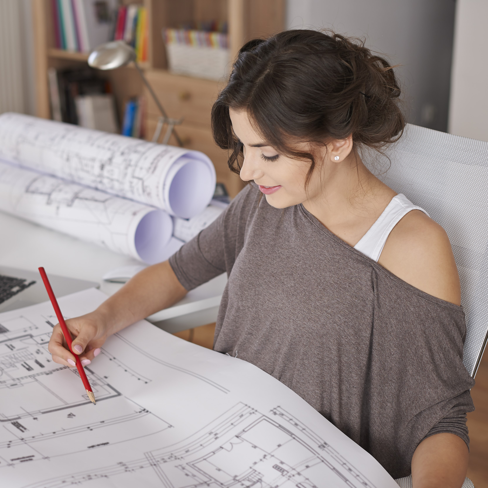
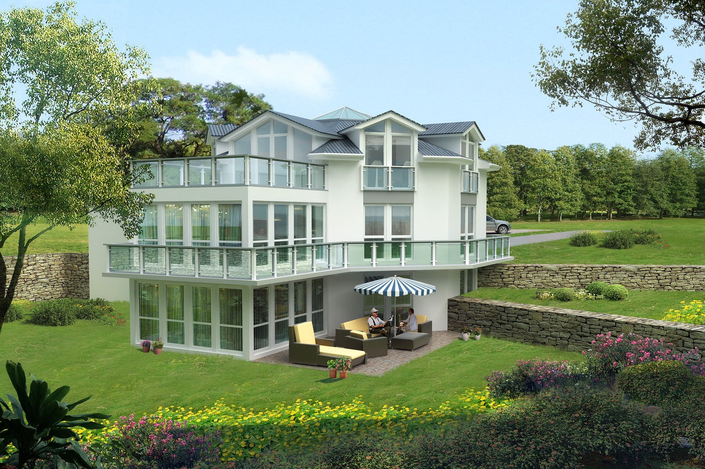
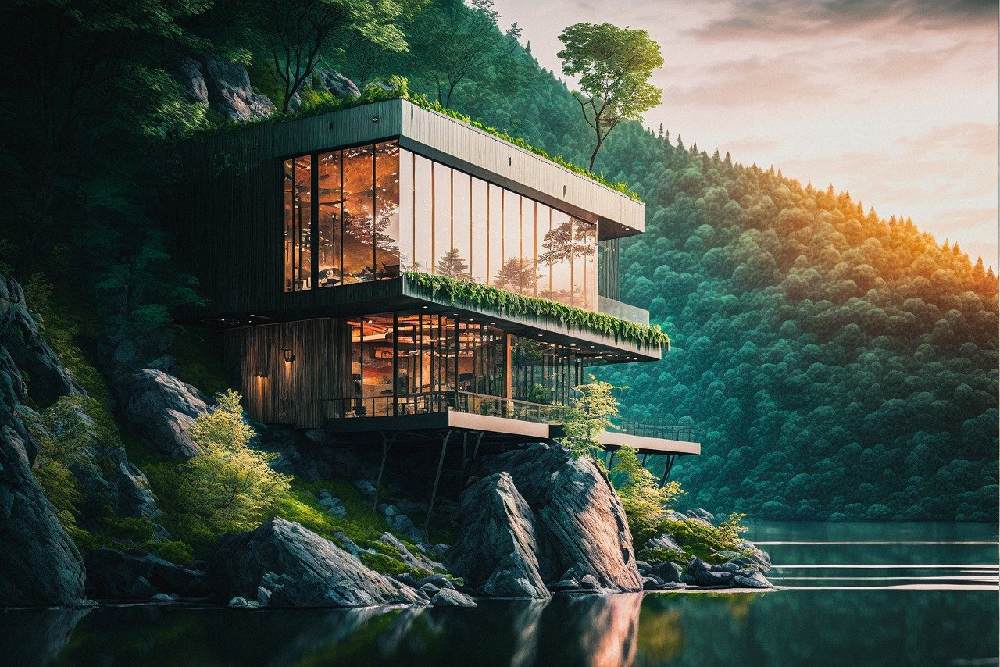

Přejete si krásný domov a hledáte někoho, kdo by Vám pomohl vaše představy uvést ve skutečnost? Pak jste zde
správně. V dnešní uspěchané době je obzvlášť důležité bydlet na místě, které je jedinečné jako vy sami.
Již jako malá holka jsem snila o práci architektky. Můj sen se stal skutečností poté, co jsem vystudovala
architekturu na Karlově universitě v Praze. Během studia jsem absolvovala několik stáží v zahraničí (např.
Barcelona, Oslo), kde jsem nabyla cenné zkušenosti.
Po škole jsem k práci připojila i roli maminky. Nyní jsem maminka již 4 dětí, které každé je jedinečné a má
své potřeby. Velmi mě obohatila zkušenost bydlení s dětmi v menším bytě i vlastní zkušenost se stavbou svého
rodinného domu. Myslím si, že tyto zkušenosti v mnohém posunuly moji práci vpřed k lepšímu porozumění potřeb
rodin.
Miluji cestování, zvláště pak do míst, kde mohu sledovat krásy tamější architektury. Inspiraci jsem nacházela
v Holandsku, Švédsku, ale i Jihoafrické republice, Etiopii, Číně a Mexiku.
Má práce

Jsem nadšená, nezávislá architektka s několika letou praxí v oboru. Mám za sebou několik desítek úspěšných
realizací individuálních domů. Ráda hledám společně se svými zákazníky ideální řešení pro jejich jedinečný
domov. Stále mě baví přemýšlet nad prostorem tak, aby splňoval veškeré požadavky osob, které jej obývají
nebo v budoucnu budou obývat. Nebojím se používat nové neotřelé materiály, techniky, nápady, které mohou
podtrhnout jedinečnost domu. Pracuji na projektu komplexně tak, aby dům i zahrada byly ve vzájemném souladu
a umožnily tak obyvatelům veškerý potřebný komfort a odpočinek.
Podívejte se na některé z realizací mých prací.


V mém portfoliu mají své místo i rekonstrukce starších domů, které jsou pro mě vždy výzvou. Mnohokrát je do
práce limitována vnějšími vlivy (např. okolní zástavbou, regulací památkovým úřadem, použitými materiály). O
to větší radost pak mám z výsledku, který nabízí potřebné možnosti majitelům domů a zároveň splňuje všechny
potřebné regule.
„Paní architektka je velmi empatická osoba, které se velmi dobře daří odhalit potřeby všech členů rodiny.
Dokázala navnímat naše životní nastavení, priority i tajná přání. Vše pak elegantně zapracovala do projektu
našeho vysněného domu. Nyní v něm žijeme již 4. rokem a jsem stále stejně nadšeni, jako při samotném navrhování
prvních plánů.“ Marina H.
„S paní architektkou se nám velmi dobře pracovalo. Byla vždy ochotná zapracovat naše nové nápady a to ve velmi
brzkém časovém horizontu. Také oceňuji, že nám byla schopná nabídnout jiné finančně dostupnější varianty tak,
aby byly zachovány všechny požadavky na náš vysněný domov.“ Petr K.